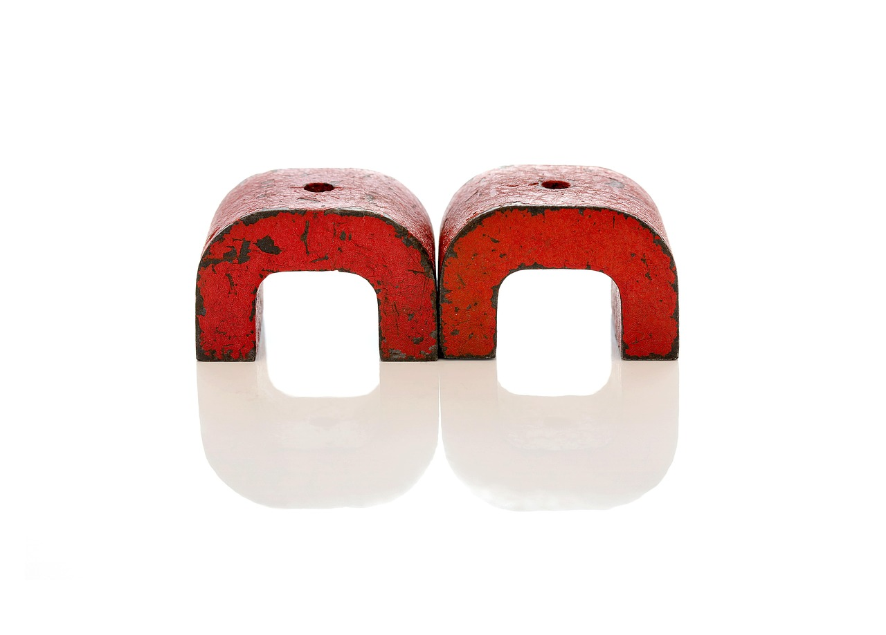

中 광물통제, AI·로봇 공급망으로 전선 확대

중국은 2023년 8월 갈륨·게르마늄 수출허가제 시행 이후 2024년 12월 안티몬·초경 소재, 2025년 2월 비스무트·인듐까지 통제 품목을 순차 확대했다. 현재 중국이 통제 중인 전략광물은 16개 품목으로, 이 중 8개가 AI 서버용 GaN 전력 소자·희토류 영구자석·로봇 관절 감속기 소재와 직접 연결된다.
AI 가속기(GPU·NPU) 전력 변환에 쓰이는 GaN 기판은 갈륨 순도 99.9999% 이상을 요구하며, 중국이 글로벌 공급의 94%를 점유한다. 산업용 로봇 핵심 부품인 네오디뮴·디스프로슘 영구자석 역시 중국 생산 비중이 87%로, 2025년 수출허가 심사 강화 이후 일본 야스카와·독일 쿠카의 납기가 평균 14주에서 22주로 늘어났다.
인더스트리뉴스 보도에 따르면 중국 상무부는 2025년 하반기부터 핵심광물 수출 승인 시 '최종 수요처 용도 심사'를 AI·로봇 산업 품목에도 적용하기 시작했다. 이는 기존 반도체 공정용에 한정됐던 할당통제 범위를 AI 인프라 전반으로 확장한 것으로, 수출 거부 사례가 전년 동기 대비 37% 증가했다.
한국은 AI 서버용 GaN 전력 모듈 소재의 98%, 로봇 감속기용 희토류 자석 소재의 73%를 중국산에 의존하고 있다. 국내 로봇 산업 연간 소재 수입액은 약 4,200억 원 규모로, 중국의 할당통제가 로봇 분야에 본격 적용될 경우 HD현대로보틱스·레인보우로보틱스 등의 생산 원가가 15~20% 상승할 것으로 추정된다.
이번 전선 확대의 핵심은 중국이 '반도체 공급망 교란'이라는 단일 목표에서 'AI 생태계 전체 소재 통제'로 전략 목표를 바꿨다는 점이다. 갈륨은 GaN 반도체 기판이자 AI 서버 전력 변환 소자 원료이고, 희토류는 로봇 모터·EV 구동계를 동시에 좌우한다. 하나의 통제 행위가 반도체·AI·로봇·전기차를 연쇄 타격하는 구조가 완성된 것이다.
한국 입장에서 더 심각한 문제는 반도체 소재 대체 전략과 AI·로봇 소재 대체 전략이 서로 다른 공급망을 요구한다는 점이다. 갈륨 대체원으로 주목받는 고려아연의 2028년 양산 계획은 반도체용 GaN 기판에 초점이 맞춰져 있고, 로봇용 희토류 영구자석은 전혀 다른 정제·가공 체계를 필요로 한다. 소재 다변화 투자가 분산되지 않으면 AI·로봇 두 산업 모두 공백이 생긴다.
일본은 희토류 대체 소재 개발에서 가장 앞선 위치에 있다. 도요타·파나소닉이 참여하는 NIMS(물질재료연구기구) 프로젝트는 네오디뮴 사용량을 30% 절감한 희토류 저감형 영구자석을 2026년 양산 목표로 개발 중이며, 일본 정부는 2024년부터 연간 500억 엔 규모의 대체 소재 R&D를 지원하고 있다.
호주는 갈륨·희토류 동시 공급 가능 국가로 급부상하고 있다. Lynas Rare Earths는 2025년 말레이시아 가공 시설 확장으로 연간 희토류 산화물 처리량을 1만 8,000t으로 늘렸고, 호주 정부의 Critical Minerals Facility(CRF)를 통해 갈륨 정제 파일럿 플랜트에 1억 호주달러를 투자했다. 한국 기업의 장기 오프테이크 계약 협상 여지가 열려 있다.
HD현대로보틱스·레인보우로보틱스 등 국내 로봇 제조사는 희토류 영구자석 납기 연장과 가격 상승에 즉각 노출된다. 레인보우로보틱스의 2024년 연간 매출 620억 원 중 소재비 비중이 38%로, 희토류 자석 가격이 20% 오르면 영업이익률 2.3%p 추가 하락이 불가피하다.
삼성전자·SK하이닉스의 HBM·DDR5 생산라인에 GaN 전력 모듈을 공급하는 국내 전력 반도체 업체들도 타격권이다. 파워큐브반도체·예스파워테크닉스 등이 사용하는 GaN 에피웨이퍼 원료 갈륨은 현재 kg당 약 2,000달러로 통제 전 대비 9배 수준이며, 납기는 주문 후 평균 20~24주다.
AI·로봇 소재 조달 담당자라면 지금 당장 갈륨·희토류·비스무트 재고를 분리해서 보유량을 점검해야 한다. 반도체용과 로봇용은 규격이 달라 서로 대체가 안 된다. 통상 3개월치 재고를 6개월치로 확대하고, 호주 Lynas 및 캐나다 Neo Performance Materials와의 장기 공급 협상을 올해 4분기 안에 시작하는 것이 현실적 타임라인이다.
산업부 소부장 1,700억 지원 사업에서 AI·로봇 소재 항목이 6대 첨단전략산업에 포함돼 있다. GaN 기판 국산화 기업과 희토류 자석 대체 소재 기업은 이 창구를 활용해 정제·가공 장비 투자금의 50%를 확보할 수 있다. 신청 기한과 품목 코드를 지금 확인하지 않으면 이 실탄은 남의 것이 된다.
실제 조달 현장에서는 — 중국 공급사가 '용도 확인서(End-User Certificate)' 요구를 AI·로봇 품목으로 확대 적용하기 시작한 2025년 하반기부터 기존 계약서만으로는 통관이 지연되는 사례가 급증했다. 수입 계약서에 최종 사용 설비명·모델번호까지 명기하고, 중국 상무부 심사 일정(통상 30~45일)을 납기 계산에 선반영해야 생산 차질을 피할 수 있다.
이 포스팅은 쿠팡 파트너스 활동의 일환으로 수수료를 제공받습니다.